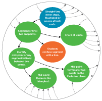

-

Integrating concept-dependency maps
We're currently linking all exercises on Siyavula Practice to concept-dependency maps we have developed for Mathematics, Physics and Chemistry. Once integrated, these maps will feed into the algorithm to better sequence the exercises according to a learner's prior knowledge, strengths and weaknesses.
-

Curriculum mapping
The concept-dependency maps will provide the algorithm with information to engineer a comprehensive learning experience for any learner, the world over. Overlaying additional maps, each one dictating the specific content and order in which it is covered according to a particular curriculum, will allow us to specifically tailor Siyavula Practice to suit different countries and schooling systems.
-
An integrated learning experience
Our mission is to create an integrated learning experience, incorporating reading, practising, interacting, designing, programming, analysing, thinking, creating and solving, that transcends the constraints of curricula and that is truly effective and engaging
-
Grow with us
If you like the sound of where we're going and are interested in licensing or partnering with us, get in touch.